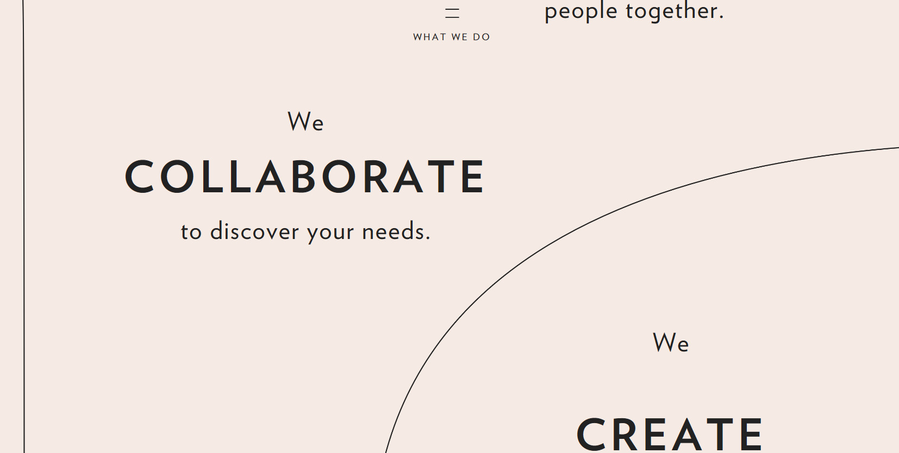

제품의 항목별 깔끔한 분류 및 정보 제공
제품에서 강조하고자하는 기능을 간단한 스크롤 애니메이션을 통해 나타냈다.
사이드 바를 통해 긴스크롤도 원하는 곳으로 빠른 이동
스크롤에 따라 애니메이션의 진행을 통한 내용 및 스토리 전달

제품의 충분한 정보를 깔끔하게 전달
개인적으로 방학동안 친구들과 일본여행을 10일간 다녀오게된 스토리를 바탕으로 여행일지를 쓰려고 합니다.
여러 사이트등을 보며 사이드바(네이게이션)를 보게 됐는데 일수 혹은 장소에 따라 페이지를 자유롭게 이동하는것을 생각하고있습니다.